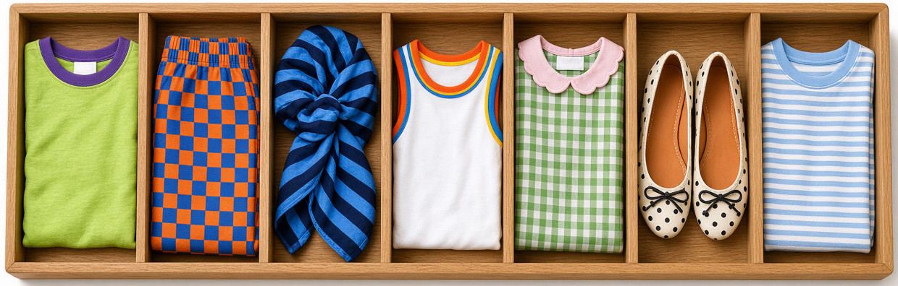

Trazos Incómodos:
Abel Bellido Córdova, conocido como Abecor, dibuja la opinión en Página Siete. Una viñeta de octubre de 2021 desató amenazas, y cuatro medios contaron el mismo caso.

¡Hola, extraño! Bienvenido a mi espacio digital. Soy BIMO de Comunicación Digital y creé este blog como un laboratorio de análisis donde la teoría universitaria se cruza con la realidad de las redes, los medios y la cultura de Internet. Aquí encontrarás desde investigaciones académicas hasta reflexiones espontáneas sobre cómo nos informamos, opinamos y conectamos hoy en día.
Read Now
Abel Bellido Córdova, conocido como Abecor, dibuja la opinión en Página Siete. Una viñeta de octubre de 2021 desató amenazas, y cuatro medios contaron el mismo caso.
 4 lecturas
4 lecturas
Un quipu guarda cuentas y memoria con colores y nudos. En La Paz siguen en los museos y, en el altiplano, todavía hay quien cuenta el ganado así.
 Video
Video
Cuando el chisme y la protesta se pegaban en las paredes